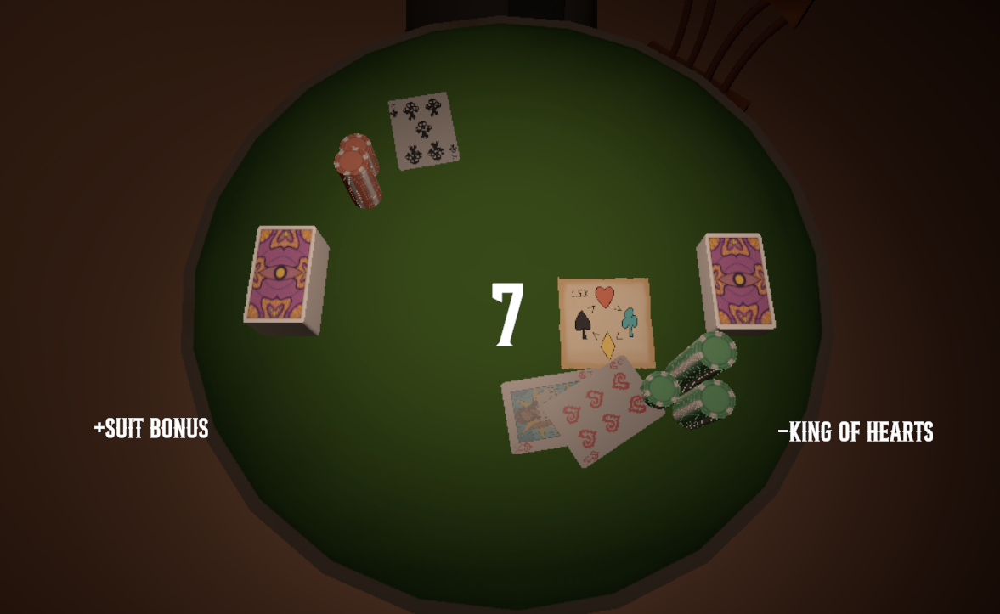

Project Overview:
Saloon showdown was the first and only project I had as assignment during my time in 2nd year.
I was placed in 2nd year right after the may break, and there was only this project left on schedule, so I basically spent the last 8 weeks working on this in the form of a group project consisting of 2 devs and 2 artists.

This project was inspired from 'Slay the spire' and Inscryption, both being games where you battle against cards. You had the regular selection of number cards ranging from 2 to 10, and face cards, of which each did something special.
What was most challenging about this project was making it turn based and almost like a roguelike, because stacking effects isn't the easiest task. Despite some last-minute bugs, it still worked pretty well.
